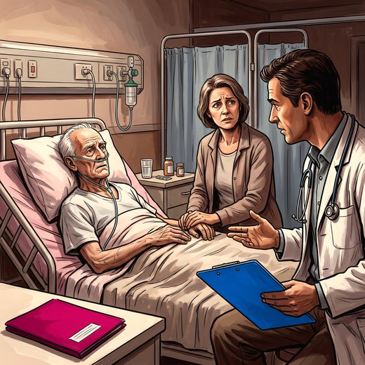

Consulta rápida à beira do leito
Condutas, doses e interações.
Referências da aula · 0
- Referências em consolidação.
Documentos oficiais
Leis e publicações do Ministério da Saúde sobre o cuidado da pessoa idosa, de acesso livre.
Abrir os documentos